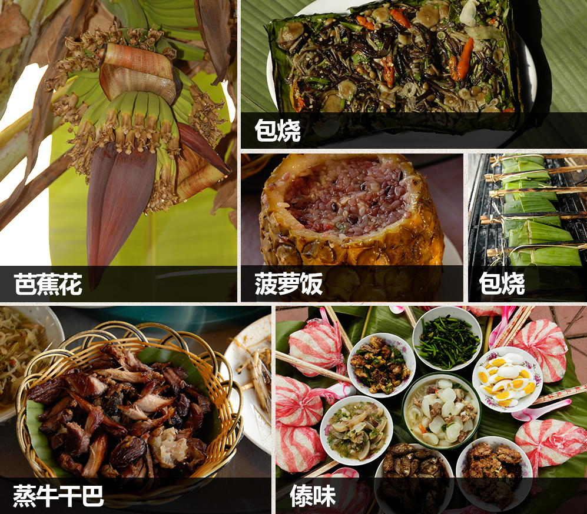
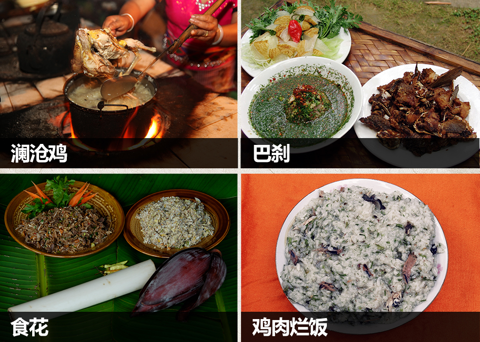
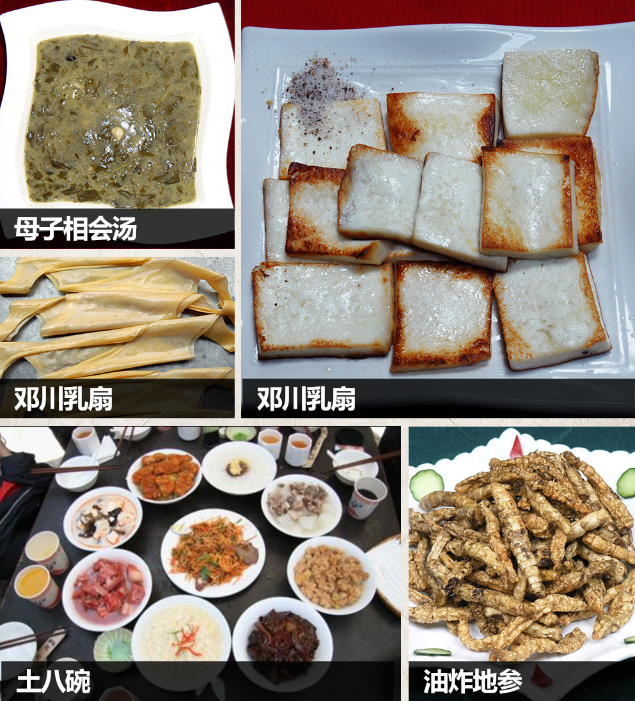
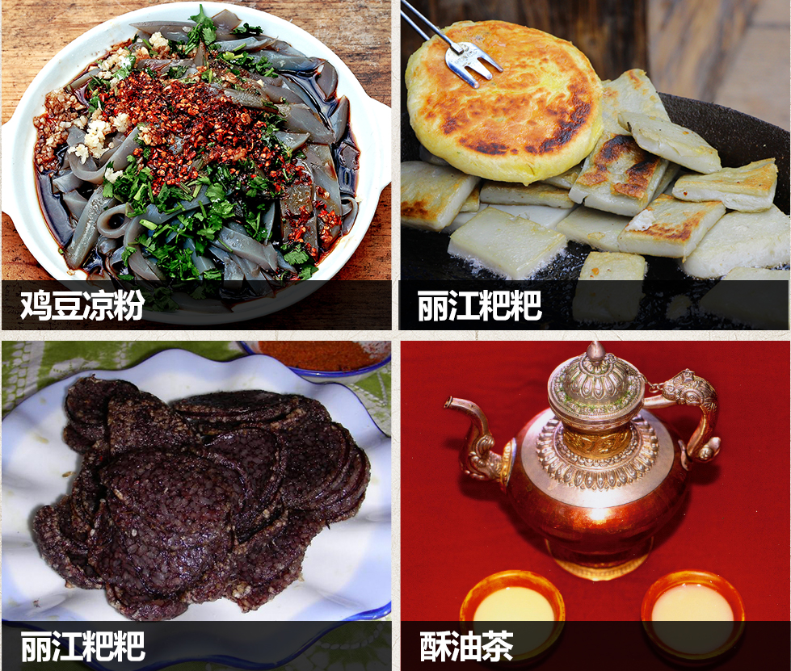
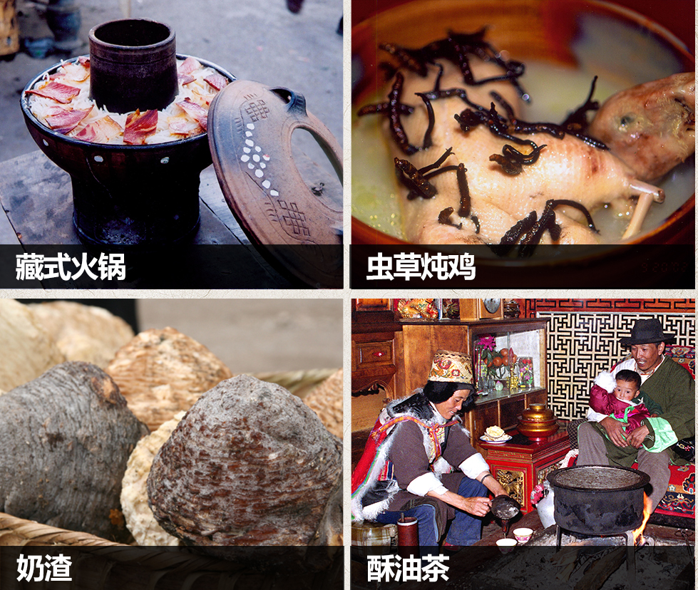

在中国大西南的崇山峻岭间，蜿蜒着一条完全由人和骡马踩踏而成的古道，它从云南、四川进入西藏，一直延伸到尼泊尔、印度，直抵西亚、西非红海岸。千百年来，成群结队的马帮从这里走过，将茶叶销往藏区，留下了缕缕茶香。
线路一：景洪市—澜沧县—孟连县—西盟县
线路二：大理（古城）—洱源县—剑川县—丽江—香格里拉
西双版纳
这里简直是美食天堂，香茅草烤鱼、菠萝紫米饭、酸笋鸡、南泌、竹筒饭、包烧……哪一样不是让人垂涎三尺！

普洱
在普洱一定要吃茶吃鸡！茶叶饭、凉茶拌饭都是这里才有的独特主食，血拌肉、澜沧鸡更是口味丰满诱人，如果在普洱看到桌上各式各样的花，一定要一尝为快。西盟的美食就惊悚的多，夹缝中的米荞、酸蚂蚁、羊奶果、蘸水稀饭、每押，酸酸甜甜别有滋味。

大理
来到大理，吃成胖子。南涧油鸡枞、巍山扒肉饵丝、大理的海稍鱼、烤乳扇、喜洲粑粑、剑川土八碗、油炸地参、母子相会汤……走一路吃一路

丽江
来到丽江一定要吃鸡豆凉粉和米灌肠，喝着酸梅汤，再来一个丽江粑粑，你还愿意离开吗？

香格里拉
感受藏族一天的饮食，酥油茶、酸奶、糌粑、藏式火锅、荞粑粑、琵琶肉，哪一样说起来不诱人。

西双版纳
离开版纳的时候，带点织锦，点缀生活。带点水果，甜甜美美。也别忘记这里有云南名优新药“血竭”，对跌打损伤、风湿痛风、妇科杂症具有较好的疗效。
普洱
普洱一宝普洱茶怎可错过。喜欢民族服饰的朋友可以在澜沧和孟连找到少数民族服饰。紫皮香蒜也是一大特色，还有可以以假乱真鸡蛋的鸡蛋果，好吃又好看。
大理
先是南涧的绿茶和泡核桃，加上民间剪纸，也是小精致的生活。来到白族生活的地方，一定要看看白族精致的刺绣与札染。别忘记邓川乳扇，烤着吃绝对是人间美味。
丽江
带着东巴文化的民族纺织品不失为一个好的选择，还有绿色天然的澄海螺旋藻。
香格里拉
收藏藏族传统配饰——藏刀（卡卓刀）和银饰。当然还有香格里拉最珍贵的宝贝——冬虫夏草。尼西木碗是喝茶的最佳搭档。这里的青稞酒喝完头不痛、口不渴。
餐厅
金塔烤鸡烤鱼店
地址：景洪市勐泐大道
电话：13988195517
华隆大酒店
地址：澜沧县民族街
电话：0879-7236999
傣韵农家乐
地址：孟连县上允角寨子内
电话：13577962977
八达饭店
地址：南涧县城附近祥临路旁
电话：0872-8521 898，0872-8521519。
巍山品香苑
地址：巍山小吃街
电话：0872-6121 666。
苍洱春
地址：大理古城人民路84号
纳西阁餐厅
地址：四方街新华街街口，五华书苑旁。
南卡名典:
地址：香格里拉县独克宗古城仓房街
电话：0887-8222224，0887-8230000。
住宿
景兰客栈
地址：景兰国际茶城内
电话：0691-8930588
皇冠大酒店
地址：景洪市勐泐大道70号
电话：0691-2199888
司岗里大酒店
地址：云龙潭路388号
电话：0879-8345888
巍山宾馆
地址：巍山古城南诏东路
电话：0872-6122655
兰林阁酒店
地址：大理古城玉洱路
电话：0872-2666188
暮光倾城客栈
地址：丽江市古城区七一街崇仁巷78号
电话：0888-5114680
香格里拉德吉央康大酒店
地址：香格里拉县香巴拉大道中段
电话：0887-8826999